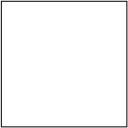

clear
source
destiny
source over
destiny over
source in
destiny in

source out
destiny out
source a top
destiny a top
xor
plus
multiply
screen
overlay
darken
lighten
color doge
color burn
hard light
soft light
difference
exclusion
|  clear |
source |
destiny |
source over |
destiny over |
source in |
destiny in |
source out |
destiny out |
source a top |
destiny a top |
xor |
plus |
multiply |
screen |
overlay |
darken |
lighten |
color doge |
color burn |
hard light |
soft light |
difference |
exclusion |